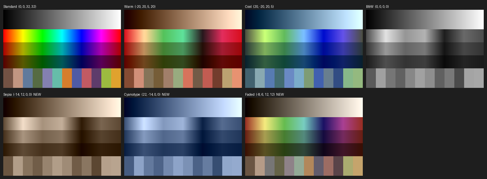
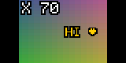
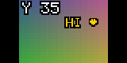
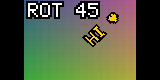
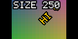

Custom Firmware
Charmera
Four new effects for the Kodak Charmera keychain camera, patched into its stock firmware
Version 2 4 Nov. 2026 Not yet run on a camera
Text Stamp
The viewfinder with a caption set up on the camera: typed, colored, placed, turned 45° and sized. Rendered by the firmware’s own drawing code in an emulator, over a test gradient where the live picture would be.
Abstract
Four effects added to the Charmera’s own firmware, after the eleven it ships with. Sepia, Cyanotype and Faded are color looks the camera’s image processor applies, so they show live in the viewfinder. Text is a pixel-font caption typed, colored, placed, rotated and sized with the camera’s buttons, drawn on the viewfinder and stamped into every photo. Every stock filter and frame still works. The patch is built from a public dump of the stock firmware and checked in an emulator; it has not yet run on a camera.
The Effects
In photo mode, Up and Down step through the effects; the four new ones follow the last Pixel filter, and Down from Standard goes straight to Text. The camera returns to Standard each time photo mode opens.
| No. | Effect | How it works | In the viewfinder |
|---|---|---|---|
| 0 | Standard | Image processor | Live |
| 1–3 | Warm, Cool, B&W | Image processor | Live |
| 4–7 | Four frames | Overlay composited after the shot | Preview overlay |
| 8–11 | Pixel red, blue, yellow, gray | Code after the shot | Live, in code |
| 12–14 | Sepia, Cyanotype, Faded | Image processor | Live |
| 15 | Text | Code after the shot | Live, in code |
Color Looks
The stock Warm, Cool and B&W are four numbers each, sent to the image processor: a shift and a gain for each of the two color axes, blue–yellow and red–cyan. The new looks are three more sets of the same four numbers, so they behave exactly like the stock ones, live in the viewfinder and in the photo. Their values are read from looks.json.
| Look | Blue–yellow shift | Red–cyan shift | Gains | Result |
|---|---|---|---|---|
| Warm (stock) | −20 | +20 | 5, 20 | Colors muted, warmed |
| Sepia | −14 | +12 | 0, 0 | Brown monochrome |
| Cyanotype | +22 | −14 | 0, 0 | Blue monochrome |
| Faded | −8 | +6 | 12, 12 | Colors at about a third, a slight warm cast |
Gains in 32nds: 32 leaves a color axis as it is, 0 removes it.

The Looks on a Test Chart
A preview made from the four numbers, not from the camera: what each number does is worked out from the stock looks, so the real tint may be a step stronger or weaker.
New Icons
Each effect shows a 16-pixel icon in the corner of the viewfinder. The looks reuse the B&W half circle in their own colors; Text is a T. They fill four icon slots the firmware ships empty.
Text Stamp
The Charmera has five buttons: Shutter, On/Off, Up, Down and Play/OK. With Text selected, Play/OK opens an editor in the viewfinder; in every step Up and Down change the value and Play/OK confirms it and moves on.
- Open
- Up or Down to the T icon, then Play/OK. With no text yet the viewfinder says OK:EDIT.
- Letters
- A–Z, 0–9, space and ! ? . , - & : ’ ♥; Play/OK keeps a letter and moves to the next, up to twelve. The tick at the end of the list finishes the text.
- Color
- White, yellow, red, blue, green, pink or black, with a contrasting outline.
- X and Y
- Up moves the text right or up, Down left or down, in steps of 5% of the frame.
- Rotation
- 15° a press; Up turns it counter-clockwise.
- Size
- 10% a press, from 10% to 400%, starting at 200%. Play/OK here closes the editor.
- Shoot
- The Shutter takes the photo with the text stamped in. Video is not stamped.
- Memory
- The setup stays until the camera is switched off. Opening the editor again starts from the current text.




The Stamped Photo
The same setup stamped into an 800 by 600 test photo by the code that runs after the shot, before the camera encodes the JPEG. The viewfinder and the photo are drawn by one routine, so the text lands where it showed.
How It Works
The camera mounts on a computer as its SD card only; the firmware sits on a separate 2 MB flash chip that USB cannot read. The work started from two independent public dumps of that chip, identical in all their code, and from photos taken with the stock frames, which match the dumped frame art pixel for pixel.
- Hardware
- A Generalplus GPCV1235F (ARM7, no memory protection), a 2 MB SPI flash chip and a 160 by 80 screen. Firmware JH5408 20250520, built 14 Oct. 2025.
- Memory
- The first megabyte of flash is copied into RAM at power-on, 512 bytes lower: RAM address = flash offset − 0x200. Frames, icons and sounds are in a compressed resource pack at 0x120000.
- Effect index
- One byte at 0x10FBC5 selects everything. Up and Down, messages 0x7002 and 0x7003 in photo mode, step it.
- Color looks
- The routine at 0x2D368 sends the image processor its four numbers. It is rewritten as a table with three more rows; the stock four send the same values as before.
- Frames
- Four 800 by 600 overlays, three compressed strips each, composited onto the photo after the shot (0xECF0), with a 112 by 80 preview on the screen.
- Pixel filters
- Code that runs after the shot (0x6E2DC) and on every viewfinder frame (0x15EB8): brightness 124 and up becomes the palette color, darker becomes black.
- New code
- About 3.5 KB of C, compiled for the ARM7 and linked into four stretches of firmware code that nothing calls — the largest a disabled USB-webcam handler — found by a reachability analysis of the whole image, and checked byte for byte before each build writes over them.
- Hooks
- Five redirected branches: Up, Down and Play/OK reach the editor first and pass through when it is closed; the display task draws the text on each viewfinder frame (0x160E0); after the shot the text is stamped into the photo before JPEG encoding (0x6E458).
The SD Card Updater
The camera updates itself from its SD card at power-on, with code that lives in the firmware itself. Read from the disassembly:
- File
- JH_5408<YYYYMMDDhhmm>_<8 hex digits>.bin in the root of the card. The hex is the sum of every byte in the file.
- Trigger
- The date stamp in the name differs from the one the firmware carries. This build writes its own stamp into itself, so the file can stay on the card without flashing again at every power-on.
- Writing
- From the start of flash, 64 KB at a time, every 256-byte page read back and checked.
- Last erase
- One more 64 KB block is erased after the file’s end. A full 2 MB file wraps round and erases the start of the firmware, so every package here stops 128 KB short, and the extra erase lands on an empty block.
Verification
Without a way to read the flash over USB, the check is an emulator: tools/emu_test.py runs the real ARM code of the stock and the patched firmware in Unicorn and compares them, 99 checks in all.
- The stock four color modes send identical values; the new ones send theirs.
- Up and Down from every effect reach the right next one, show its icon and hide the rest.
- After a shot, frames run only for the frame effects and the Pixel code only for Pixel.
- Up, Down and Play/OK reach the editor only on Text and only while it is open; everywhere else they do what they did.
- A whole editor session, driven through the camera’s own button handling, renders the viewfinder at every step: the screenshots on this page.
- The stamp never writes outside the photo, even at the largest size in a corner.
- Every changed byte lies in a region the build names, and the build is reproducible: the same inputs give the same file.
Status and Risks
- Not yet run on a camera. The emulator runs the patched code, not the image processor, the screen or the JPEG encoder.
- The color looks’ strength is an estimate from the stock ones.
- For the original Charmera only, which powers on to a yellow Kodak logo. The Millennium and CLOT editions run different firmware, and flashing this onto one stops it taking photos.
- Flashing resets the camera’s settings and clears photos kept in its internal memory. Photos on the SD card are not touched.
- A power cut during an update can leave the camera needing its flash chip reprogrammed directly.
- Start-up and the updater are not touched, so as long as the camera starts, a stock package from the same build puts the original firmware back.
Build and Flash
No firmware is published here, original or patched: it is Kodak’s. The build takes a public dump of the stock firmware and patches it on your own computer.
- Dump
- Clone keychain-camera-plus and Project-Sirius into
third_party/; the build checks the dump’s code against a known hash before it changes anything. - Build
pip install -r requirements.txt, thenpython tools/build_fx.py. It writes the update package and a stock package to restore with.- Test
python tools/emu_test.pymust end with ALL PASS.- Flash
- Copy the one
.binto the root of the FAT32 card, insert it in the camera while it is off, switch on and wait for Upgrade 100%, then take the card out. Only oneJH_5408file on the card at a time. - Change it
- The looks are in
looks.json, the text stamp infx_text/fx_text.c, the font intools/fx_tables.py. Rebuild with a new stamp, test, flash.
Sources
- hark_charmera The patcher, the C source, the emulator tests, the reverse-engineering notes and this page.
- Project-Sirius A full dump of the original Charmera’s flash chip.
- Keychain Camera Plus A second dump, and the first notes on the SD card updater.
- Better Taste for a Tiny Camera Notes on the camera’s filters, frames and flash layout.